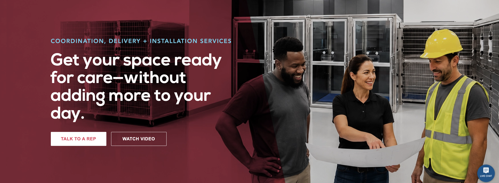
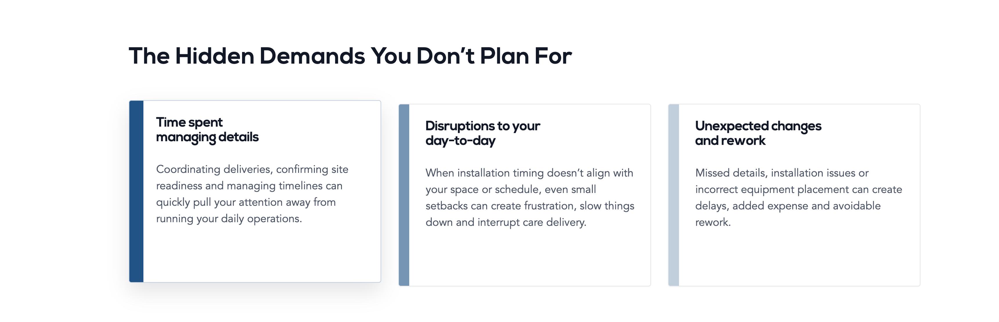
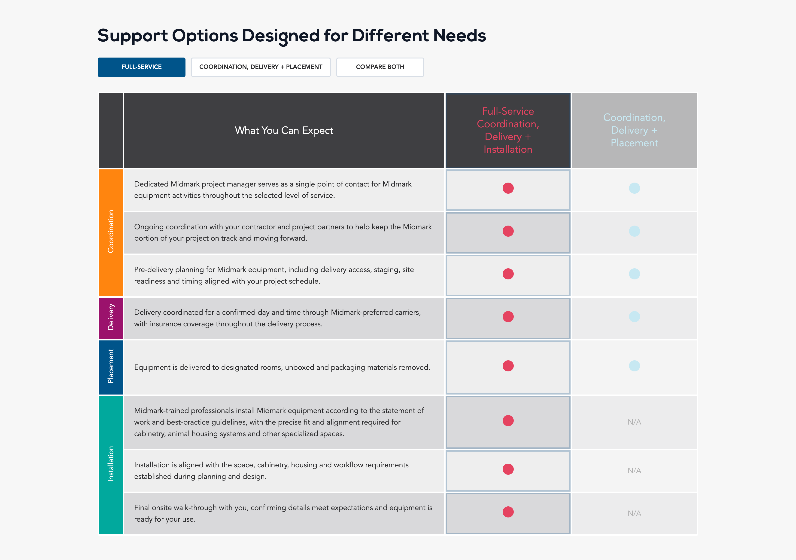
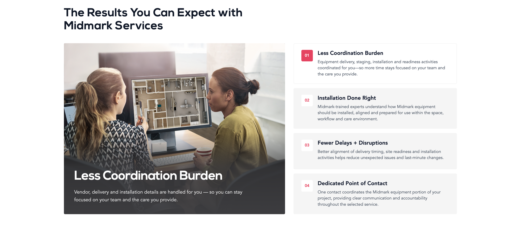
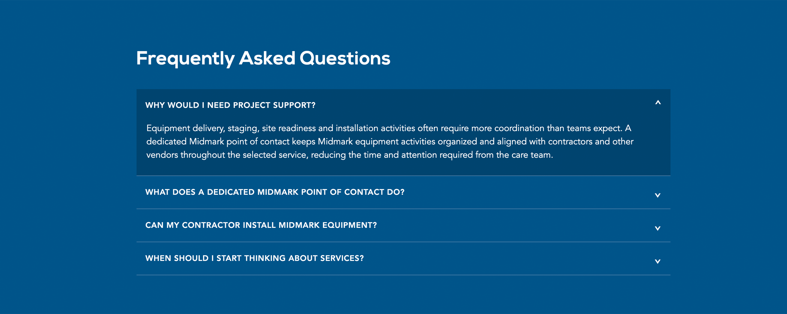

Making a new service
easy to understand.
How I built a customer-first digital experience to introduce Midmark Veterinary's new Coordination, Delivery + Installation Services—from recognizing the problem to understanding the right level of support.

A new offering.
A story to tell.
Midmark was introducing a new department and services supporting the coordination, delivery and installation of veterinary equipment. I was tasked with creating a page that could explain this unfamiliar offering and make its value clear.
My challenge was to show that this wasn't simply about construction or installing equipment. It was about helping busy veterinary teams manage the many details between purchasing equipment and being ready to provide care.
The design goal: help visitors recognize their own challenges, understand the available support, and feel confident taking the next step.
Every section has
a reason to exist.
I organized the experience around the questions customers would naturally ask. Instead of presenting everything at once, the page moves from the problem to the available options, expected outcomes and remaining questions.
Lead with the pain point.
I wanted visitors to immediately recognize the hidden demands of equipment projects: managing details, unexpected disruptions and the possibility of rework.
Why this matters: Starting with the customer's experience creates context for why the service is valuable before introducing what Midmark offers.

Turn complexity into comparison.
The service options involve different levels of coordination, delivery, placement and installation. I prioritized a comparison experience so visitors could see the distinctions without navigating between separate pages.
Why this matters: Clear differences help customers evaluate which level of support fits their project. The option controls also gave me an opportunity to practice active states and interaction design.

Make the benefits tangible.
Rather than relying only on descriptions of service tasks, I used an interactive results section to connect the offering to outcomes customers care about—less coordination burden, fewer disruptions and a dedicated point of contact.
Why this matters: The selected benefit is visually emphasized while the others remain available. This was a deliberate opportunity to explore hover and active states that make the experience feel responsive.

Thoughtful interactions.
Less overwhelm.
This project was also a chance for me to strengthen my user experience skills through hover effects, active states, service-option controls and dropdowns.
I wanted interactions to do more than add visual polish. They needed to signal what could be explored, provide feedback when something was selected, and allow visitors to reveal information when it became relevant.
The FAQ accordion is a good example: it keeps the page concise while allowing visitors to expand the specific questions they need answered.

From wireframe
to live experience.
I started by mapping the story the page needed to tell, then organized the content into a journey: customer challenges, service differentiation, package options, expected benefits, supporting context and FAQs.
The wireframe helped establish the sequence before I translated it into a visual and interactive page. Throughout the process, I focused on hierarchy, discoverability and purposeful interaction.
A clearer path
to understanding.
The finished page introduces a new service with a customer-first narrative, helps visitors compare support options, and gives them ways to explore benefits and answer questions before contacting Midmark.
For me, the project reinforced that good UX is not only about what a page looks like. It's about the order information appears, how people make decisions, and how each interaction supports the larger story.
This case study describes the design decisions and published experience. It does not claim measured usability or conversion improvements without supporting research or analytics.
See the experience
in action.
Explore the published page to experience its hover effects, comparison controls and FAQ interactions, or review the wireframe behind the content strategy.